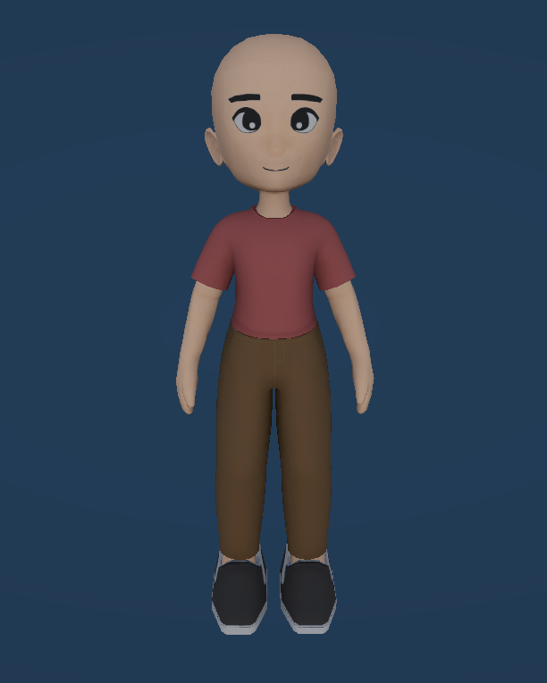
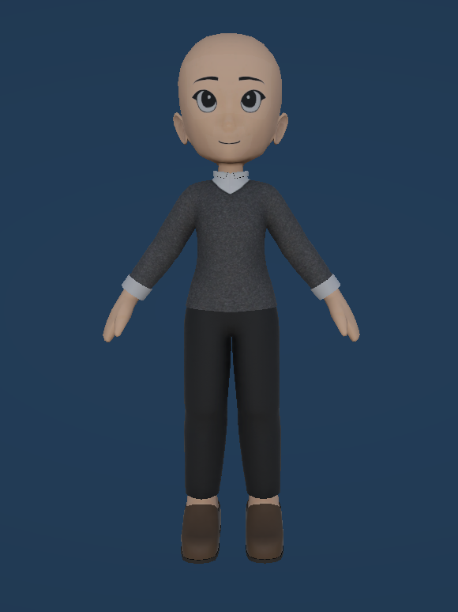
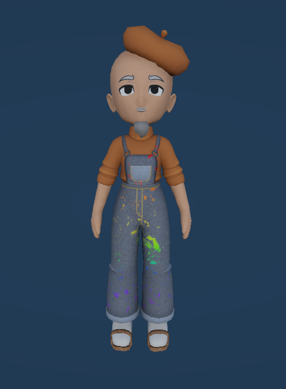

Midnight Oil
Midnight Oil
Midnight Oil
Midnight Oil
A transparent look behind the scenes of Going Once!
Snapshots of progress, ideas, challenges, and milestones.
Development is ongoing — new features, updates, and behind-the-scenes content will be added here.
Added an End of Day summary screen showing the player's daily results and earnings.
NPCs now actively bid during auctions with varied behaviour and strategies.
Added an Art Selection Screen where players can choose art pieces to sell.
Added a Journal system for players to track their progress and discoveries.
NPCs now browse the gallery and react to the displayed art pieces.
Players can now place and arrange art pieces in their gallery.
Added a new loading screen with updated visuals and transitions.
Refreshed the Main Menu with a new look and improved navigation.
Refined the tutorial with improved flow and clearer instructions.
Added a tutorial to guide new players through the basics of the game.
Updated the Haggling system with improved mechanics and visuals.
Updated the Tuning Fork tool with improved visuals and interaction.
Updated the Phone tool with improved visuals and interaction.
Updated the Scanner tool with improved visuals and interaction.
Updated the Magnifying Glass tool with improved visuals and interaction.
Updated the Black Light tool with improved visuals and interaction.
Updated the look of the Phase 1, Phase 2, and Phase 3 rooms with new art and lighting.


Created character models for the NPC, Player, and Professor.



Revamped the Gallery view where players can browse and manage their collection of acquired art pieces.

Updated the core Auction system with refined bidding mechanics, improved NPC behaviour.

Added a Tuning Fork tool Minigame. Used to reveal the Age Art Tag.

Added a Phone tool Minigame. Call a professional for their opinion, revealing a random undiscovered Art Tag.

Added a Scanner tool Minigame. Red ray scans to reveal the Material Art Tag.

Added a Black Light tool Minigame. Players can use this tool to reveal the originality tag.

Added a Magnifying Glass tool Minigame. Players can use this tool to reveal the theme tag.

Implemented a Main Menu UI for the game including buttons to start a new game, load a game, access settings, and quit the game.

Implemented a Haggling System where players can negotiate prices with NPC buyers when buying art pieces.

Implemented Auctioneer Skills System. Players can choose skills that will impact the auction gameplay before the bidding starts.